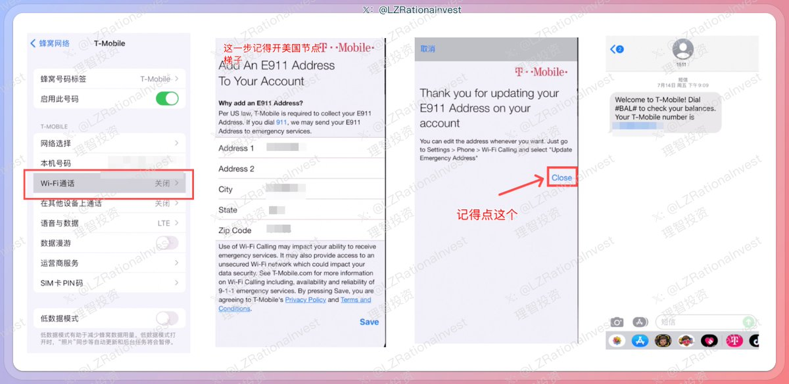

奶昔🥤
@realNyarime
@LZRationalnvest wificalling主要是得更新e911，但这个问题在Android就没有
美国运营商没有限制海外IP连vowifi，不像英国还得准备个当地IP，也没有定位限制本国

李志 | Rational Investing
@LZRationalnvest
T-mobile激活Wi-Fi Call指南
上次给大家介绍了一下这张T-Mobile手机卡，虽然套餐支持漫游，但强烈建议始终启用 Wi-Fi 通话，在 Wi-Fi 通话模式下，所有通信都按美国本地资费计算，可以有效避免昂贵的国际漫游费用。
Wi-Fi Call是什么？ https://t.co/tufA1SElfM https://t.co/H9VbE0vmzR